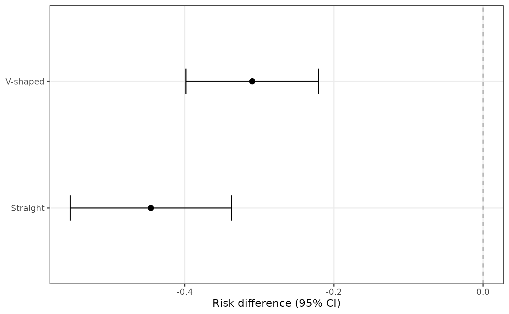

Convert marginaleffects results to forest data
Source:R/as_forest_data_marginaleffects.R
as_forest_data_marginaleffects.RdStandardizes results from marginaleffects into forest_data. One method
covers both unit-level and averaged results because
marginaleffects::avg_comparisons(), marginaleffects::avg_predictions(),
and marginaleffects::avg_slopes() return the same classes as
marginaleffects::comparisons(), marginaleffects::predictions(), and
marginaleffects::slopes(). Results from marginaleffects::hypotheses()
are supported as well.
Usage
# S3 method for class 'comparisons'
as_forest_data(
data,
...,
label = NULL,
group = NULL,
facet = NULL,
subgroup = NULL,
term_labels = NULL,
exponentiate = NULL,
estimate_scale = NULL,
effect_label = NULL,
reference_value = NULL,
conf.level = NULL,
sort_terms = c("none", "descending", "ascending"),
p_method = c("level", "overall")
)
# S3 method for class 'predictions'
as_forest_data(
data,
...,
label = NULL,
group = NULL,
facet = NULL,
subgroup = NULL,
term_labels = NULL,
exponentiate = NULL,
estimate_scale = NULL,
effect_label = NULL,
reference_value = NULL,
conf.level = NULL,
sort_terms = c("none", "descending", "ascending"),
p_method = c("level", "overall")
)
# S3 method for class 'slopes'
as_forest_data(
data,
...,
label = NULL,
group = NULL,
facet = NULL,
subgroup = NULL,
term_labels = NULL,
exponentiate = NULL,
estimate_scale = NULL,
effect_label = NULL,
reference_value = NULL,
conf.level = NULL,
sort_terms = c("none", "descending", "ascending"),
p_method = c("level", "overall")
)
# S3 method for class 'hypotheses'
as_forest_data(
data,
...,
label = NULL,
group = NULL,
facet = NULL,
subgroup = NULL,
term_labels = NULL,
exponentiate = NULL,
estimate_scale = NULL,
effect_label = NULL,
reference_value = NULL,
conf.level = NULL,
sort_terms = c("none", "descending", "ascending"),
p_method = c("level", "overall")
)Arguments
- data
A
comparisons,predictions,slopes, orhypothesesobject frommarginaleffects.- ...
Not used; must be empty.
- label
Optional column used as the displayed row label instead of the composed label.
- group
Optional column used to color and dodge estimates that share a row, such as a
byvariable.- facet
Optional column used to split rows into plot sections.
- subgroup
Optional column used to group rows under hierarchical headers, such as
"term"for several contrasts of one factor. Rows are gathered into contiguous blocks in order of first appearance.- term_labels
Optional named vector used to relabel identifier values (for example
c(hp = "Horsepower")) or composed row labels.- exponentiate
NULLkeeps the reported scale.TRUEconverts log-scale estimates to ratios andFALSEconverts ratios to the log scale.- estimate_scale
Optional override for the detected effect scale. One of
"identity","log","ratio","probability", or"risk_difference".- effect_label
Optional override for the effect label used on the axis and in tables.
- reference_value
Optional override for the reference line value. Use
NULLfor no reference line.- conf.level
NULLuses the confidence level stored in the object. A number must match the stored level.- sort_terms
How to sort rows:
"none","descending", or"ascending".- p_method
Subgroup p-value placement when
subgroupis mapped. Defaults to"level"becausemarginaleffectsreports one test per row.
Value
A forest_data object. The original identifier columns, such as
term, contrast, and by variables, are retained for table helpers.
Details
Estimates, confidence intervals, p-values, and the confidence level are
taken from the object exactly as marginaleffects computed them. Nothing
is re-estimated, so conf.level can only confirm the stored level. To
change the interval, recompute it with the conf_level argument in
marginaleffects.
Row labels are built from the identifier columns that vary across rows:
hypothesis, term, group, contrast, any by variables, and, for
predictions, the variables supplied through newdata = datagrid(...). A
single varying identifier is shown as is, for example "F" and "M".
Several identifiers are combined, for example "cyl: 6 - 4" or
"hp, am = 1". Columns mapped to group, facet, or subgroup are
removed from the label. Supply label to use one column directly.
The effect scale is inferred from the comparison function, the prediction
type, any transform, and the model link:
Differences, slopes, and hypothesis tests are additive with a reference line at 0.
comparison = "ratio"or"ratioavg", and"lnratio"or"lnor"comparisons withtransform = exp, are ratios on a log10 axis with a reference line at 1. Delta-method intervals for"ratio"comparisons are symmetric and can cross zero;comparison = "lnratioavg"withtransform = expgives intervals that are always positive."lnratio"and"lnor"comparisons, and differences computed on a log or logit link withtype = "link", are on the log scale.exponentiate = TRUEconverts them to ratios.Predictions have no null value, so no reference line is drawn. Response-scale predictions from binomial models are probabilities.
Set estimate_scale, effect_label, or reference_value when the
detected scale does not describe a custom comparison or transformation.
Examples
if (requireNamespace("marginaleffects", quietly = TRUE)) {
fit <- glm(am ~ hp + wt + factor(cyl), data = mtcars, family = binomial())
# Average risk differences for each predictor
cmp <- marginaleffects::avg_comparisons(fit)
ggforestplot(cmp) +
add_forest_table(columns = c("term", "estimate", "ci", "p"))
# Average risk ratios, with factor contrasts grouped under a header
ratios <- marginaleffects::avg_comparisons(
fit,
comparison = "lnratioavg",
transform = exp
)
as_forest_data(ratios, subgroup = "term")
# Treatment effects within subgroups
by_vs <- marginaleffects::avg_comparisons(fit, variables = "wt", by = "vs")
ggforestplot(by_vs, term_labels = c("0" = "V-shaped", "1" = "Straight"))
}
#> Warning: The `cyl` variable is treated as a categorical (factor) variable, but the original data is of class numeric. It is safer and faster to convert such variables to factor before fitting the model and calling a `marginaleffects` function. This warning appears once per session.
